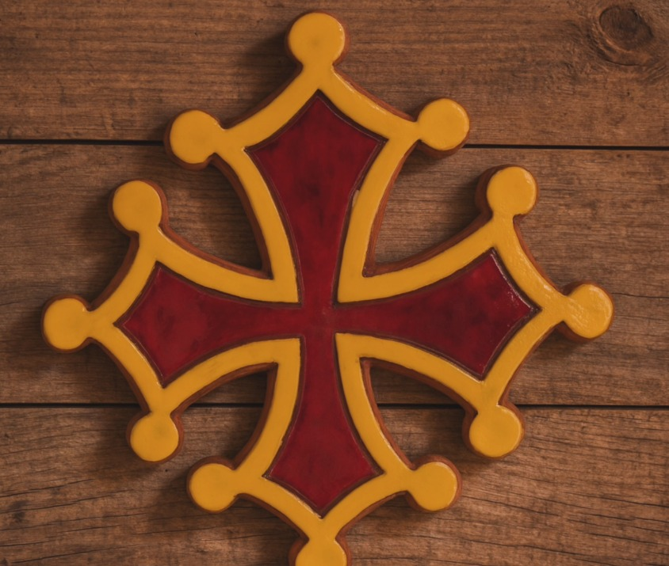
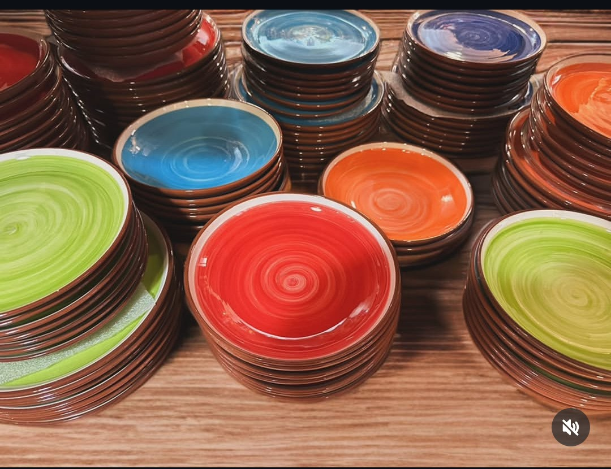
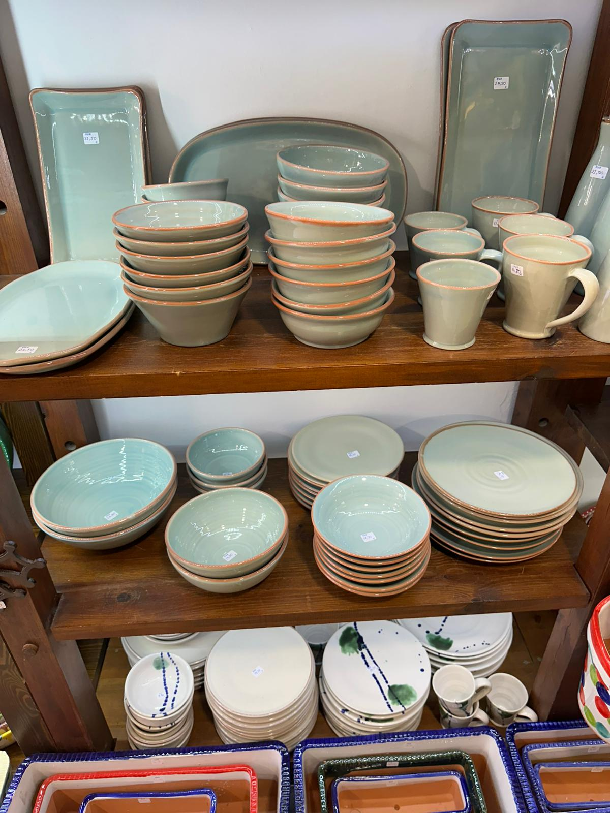
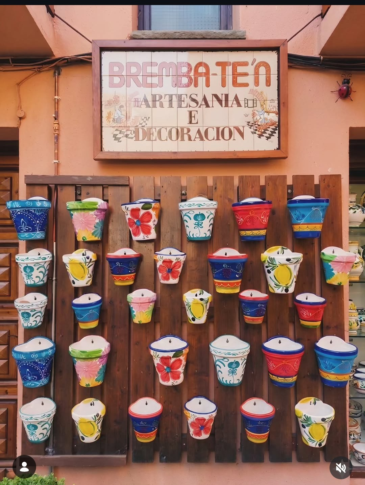

Menaje, decoración y exterior en cerámica española hecha y pintada a mano. Negocio familiar en Bossòst desde 1978, con piezas traídas de distintas regiones de España.
Un vistazo al proceso y a las piezas que encontrarás en la tienda.
Dos materiales, dos terrenos de fuerza. Descubre cuál encaja con lo que buscas.


@Brembaten, una selección de piezas de nuestras colecciones.
Ver más en InstagramGalería actualizada por temporada con nuestras últimas colecciones.

Bremba-te'n abrió sus puertas en Bossòst en 1978 y desde entonces es un negocio familiar dedicado a la artesanía y la decoración. Generación tras generación, seleccionamos pieza a pieza cerámica española hecha y pintada a mano.
En tienda encontrarás menaje de mesa, decoración y piezas para el exterior: vajillas de color vivo, jarrones y floreros, paragüeros, y utensilios de cocina tradicional como tajines y cazuelas de barro. Ninguna pieza es idéntica a otra, y así queremos que se sienta cada una en tu casa.
Si pasas por el Valle de Arán, te esperamos en Bossòst para que veas y toques las piezas en persona.
Opiniones reales de clientes que han pasado por la tienda en Bossòst.
"Bremba-te'n es una tienda de cerámica de referencia. Desde hace más de 40 años ofrece artesanía en estado puro, con trato directo con los talleres más emblemáticos. Bajo el mimo de tres generaciones, con un gusto muy fino en la selección, se vienen citando las mejores cerámicas de toda España. ¡Gracias!"
"Paso por esta tienda cada vez que estoy en Bossòst, y siempre es un verdadero placer. Las piezas son únicas, magníficas y de gran calidad. Se nota que están hechas para durar. Me gusta que las colecciones cambian con regularidad. Mención especial para el encargado, extremadamente simpático. Una dirección imprescindible."
"Bonito descubrimiento, esta tienda llena de colores. Objetos preciosos de cerámica y decoración original. Muy buena acogida y servicio. El embalaje está hecho con mucho cuidado para el transporte. Si estás de paso, no dudes en pasarte."
Estamos en Bossòst, Valle de Arán. Escríbenos o pasa por la tienda.